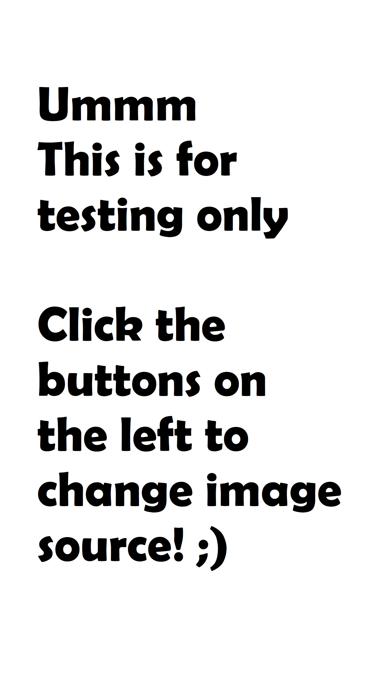

Filters:

About:
Click on a filter to the left to see more.
Click on a filter to the left to see more.
This page is currently under very active development, so you will often notice changes to it.
Please report any bugs to wxcapture@gmail.com or submit an issue on Github